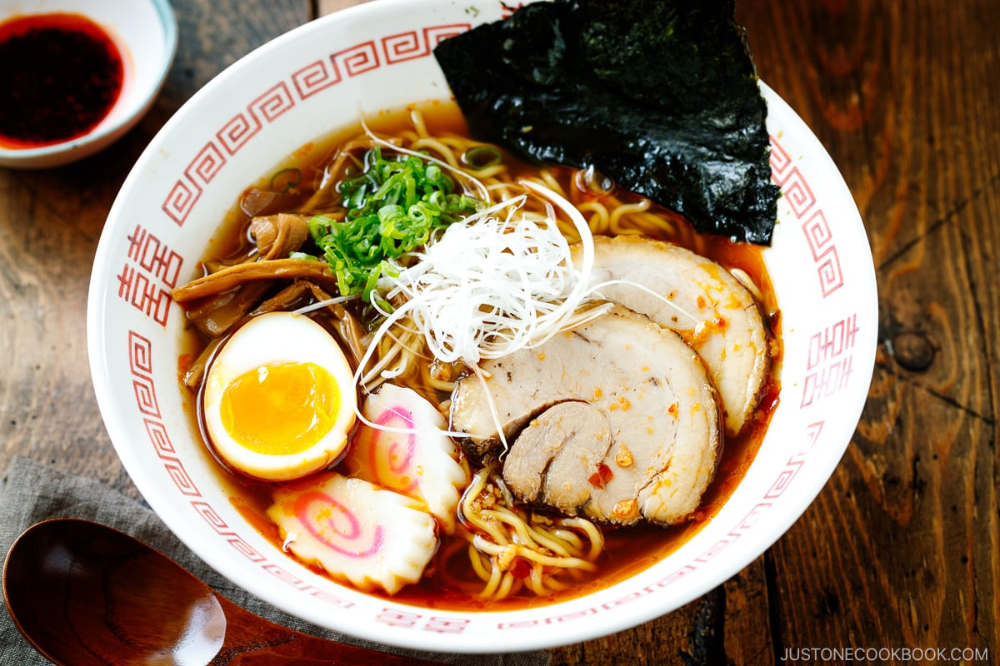

Ramen Recipe

Description
Traditional, Shoyu ramen, cooked in pork neck bone broth
Ingredients
- 6 lb Pork Neck Bone
- 2 lb Pork Shoulder or Pork Belly
- 1 Large Leek
- 2 ginger roots
- 1 dried konbu or kelp
- 2 bulbs of garlic
- 1 & 1/2 tbsps. chicken powder
- 2 tbsp sake
- 1 tbsp mirin
- 1 & 1/2 cup soy sauce
- 3/4 cup sake
- 3/4 cup mirin
- 2 Eggs
Steps
- Soak the pork bones in cold water for 30 minutes to an hour
- Discard the water, bring a pot of new water to a boil, and blanche the pork bones for 5-7 mintues
- Drain and discard the water
- Thoroughly wash each neck bone, and place into pot boiling water over high heat
- Add each fragrance vegetable
- Sliced Ginger
- Leek chopped in half and cleaned
- 2 bulbs of garlic cut in half
- Dried kombu or kelp. Be sure to remove any excess white stuff
- 1 & 1/2 tbsp. of chicken powder
- Skim off excess material that accumulates at the top. Be sure not to stir the soup as the scum could sink back to the bottom
- Afterwards, cover the pot, reduce to low heat, and simmer the broth for 3 hours
- Now, place your pork shoulder or belly into the pot, and simmer for 30 - 45 minutes
- In a separate pot will be the tare
- Mix together Ginger
- 3/4 cup sake
- 3/4 cup mirin
- 1 & 1/2 cup soy sauce
- Bring the tare to a boil over high heat for 5-7 minutes
- Once both the pork shoulder/belly and tare are ready, spread the tare sparingly over the meat
- Afterwards, cool the pork in a refrigerator
- Drain out the ramen broth into a bowl. It’s up to you whether you’d like to save or throw away the rest of the bones and fragrance vegetables.
- Decide how much ramen you are going to serve, and keep an appropriate amount of broth simmering over the stove
- Take out the pork. You may cut to your desire. Spread the tare over each cut tenderly and sparingly. We just want to bring out a little color in the pork.
- Bring out another bowl, fill it with water, and bring to a boil
- Take your noodles, and prepare them according to the instructions on the bag. Be mindful of how soft or firm you want your noodles
- In a ramen bowl, add:
- 1/4 to 1/3 cup tare (depending on how salty you’d like it)
- 1-2 cups of broth, I usually just eyeball this
- Add your noodles
- Add your garnish: egg, green onions
- Enjoy!